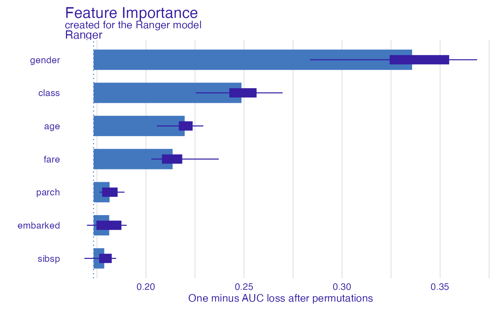

Survival on the RMS Titanic with Forester
Przemyslaw Biecek
2022-07-28
Source:vignettes/vignette_titanic.Rmd
vignette_titanic.RmdData for Titanic survival
Let’s see an example for DALEX package for
classification models for the survival problem for Titanic dataset. Here
we are using a dataset titanic available in the
DALEX package. Note that this data was copied from the
stablelearner package.
#> gender age class embarked fare sibsp parch survived
#> 1 male 42 3rd Southampton 7.11 0 0 0
#> 2 male 13 3rd Southampton 20.05 0 2 0
#> 3 male 16 3rd Southampton 20.05 1 1 0
#> 4 female 39 3rd Southampton 20.05 1 1 1
#> 5 female 16 3rd Southampton 7.13 0 0 1
#> 6 male 25 3rd Southampton 7.13 0 0 1Simple model with forester
Let’s use the forester to train the model.
# prepare model
library("forester")
model_fr <- train(titanic_imputed, "survived")#> -> type set to classification
#> -> leaderboard
#> Random Forest Ranger
#> recall 0.5804196 0.4895105
#> precision 0.8137255 0.8235294
#> f1 0.677551 0.6140351
#> accuracy 0.8208617 0.8004535
#> auc 0.7972028 0.8146853
model_fr#> Model label: Ranger
#> Model class: foresterRanger,forester,ranger
#> Data head :
#> gender age class embarked fare sibsp parch
#> 1 male 42 3rd Southampton 7.11 0 0
#> 2 male 13 3rd Southampton 20.05 0 2Leaderboard
model_fr$leaderboard#> Random Forest Ranger
#> recall 0.5804196 0.4895105
#> precision 0.8137255 0.8235294
#> f1 0.677551 0.6140351
#> accuracy 0.8208617 0.8004535
#> auc 0.7972028 0.8146853Model performance
model_performance(model_fr)#> Measures for: classification
#> recall : 0.4895105
#> precision : 0.8235294
#> f1 : 0.6140351
#> accuracy : 0.8004535
#> auc : 0.8146853
#>
#> Residuals:
#> 0% 10% 20% 30% 40% 50%
#> -0.89176341 -0.30711823 -0.23354755 -0.19485997 -0.17280332 -0.14513466
#> 60% 70% 80% 90% 100%
#> -0.10287296 0.04372787 0.30638212 0.66110920 0.94269110Variable importance plots
Use the variable_importance() explainer to present the
importance of particular features. Note that
type = "difference" normalizes dropouts, and now they all
start in 0.
vi_rf <- model_parts(model_fr)
head(vi_rf)#> variable mean_dropout_loss label
#> 1 _full_model_ 0.1853147 Ranger
#> 2 parch 0.1811928 Ranger
#> 3 sibsp 0.1906545 Ranger
#> 4 embarked 0.1906967 Ranger
#> 5 age 0.1973835 Ranger
#> 6 fare 0.2197775 Ranger
plot(vi_rf)
Variable effects
As we see the most important feature is Sex. Next three
important features are Pclass, Age and
Fare. Let’s see the link between model response and these
features.
Such univariate relation can be calculated with
variable_effect().
Age
Kids 5 years old and younger have a much higher survival probability.
vr_age <- model_profile(model_fr, variables = "age")
head(vr_age)#> $cp_profiles
#> Top profiles :
#> gender age class embarked fare sibsp parch _yhat_ _vname_
#> 569 male 0.5833333 2nd Southampton 13 0 0 0.6191116 age
#> 569.1 male 2.0000000 2nd Southampton 13 0 0 0.6117835 age
#> 569.2 male 3.8000000 2nd Southampton 13 0 0 0.6076622 age
#> 569.3 male 5.4000000 2nd Southampton 13 0 0 0.5685130 age
#> 569.4 male 8.0000000 2nd Southampton 13 0 0 0.5625897 age
#> 569.5 male 9.0000000 2nd Southampton 13 0 0 0.5116755 age
#> _ids_ _label_
#> 569 569 Ranger
#> 569.1 569 Ranger
#> 569.2 569 Ranger
#> 569.3 569 Ranger
#> 569.4 569 Ranger
#> 569.5 569 Ranger
#>
#>
#> Top observations:
#> gender age class embarked fare sibsp parch _yhat_
#> 569 male 41 2nd Southampton 13.0000 0 0 0.06708125
#> 871 male 22 3rd Southampton 7.1711 0 0 0.08861397
#> 1354 male 41 victualling crew Southampton 0.0000 0 0 0.14798551
#> 1217 female 9 3rd Cherbourg 15.0411 1 1 0.57417887
#> 2163 male 21 victualling crew Southampton 0.0000 0 0 0.21215020
#> 233 female 25 2nd Southampton 30.0000 1 1 0.90658289
#> _label_ _ids_
#> 569 Ranger 1
#> 871 Ranger 2
#> 1354 Ranger 3
#> 1217 Ranger 4
#> 2163 Ranger 5
#> 233 Ranger 6
#>
#> $agr_profiles
#> Top profiles :
#> _vname_ _label_ _x_ _yhat_ _ids_
#> 1 age Ranger 0.5833333 0.5904823 0
#> 2 age Ranger 2.0000000 0.5606976 0
#> 3 age Ranger 3.8000000 0.5624471 0
#> 4 age Ranger 5.4000000 0.5298821 0
#> 5 age Ranger 8.0000000 0.5215693 0
#> 6 age Ranger 9.0000000 0.4880794 0
#>
#> $color
#> [1] "#4378bf"
plot(vr_age)
Passenger class
Passengers in the first-class have much higher survival probability.
vr_class <- model_profile(model_fr, variables = "class")
plot(vr_class)
Fare
Very cheap tickets are linked with lower chances.
vr_fare <- variable_profile(model_fr, variables = "fare")
plot(vr_fare)
Embarked
Passengers that embarked from C have the highest survival.
vr_embarked <- model_profile(model_fr, variables = "embarked")
plot(vr_embarked)
Instance level explanations
Let’s see break-down explanation for model predictions for 8 years old male from 1st class that embarked from port C.
new_passanger <- data.frame(
class = factor("1st", levels = c("1st", "2nd", "3rd", "deck crew", "engineering crew", "restaurant staff", "victualling crew")),
gender = factor("male", levels = c("female", "male")),
age = 8,
sibsp = 0,
parch = 0,
fare = 72,
embarked = factor("Southampton", levels = c("Belfast", "Cherbourg", "Queenstown", "Southampton"))
)
sp_rf <- predict_parts(model_fr, new_passanger)
plot(sp_rf)It looks like the most important feature for this passenger is
age and sex. After all his odds for survival
are higher than for the average passenger. Mainly because of the young
age and despite being a male.
Session info
#> R version 4.1.0 (2021-05-18)
#> Platform: x86_64-apple-darwin17.0 (64-bit)
#> Running under: macOS Big Sur 10.16
#>
#> Matrix products: default
#> BLAS: /Library/Frameworks/R.framework/Versions/4.1/Resources/lib/libRblas.dylib
#> LAPACK: /Library/Frameworks/R.framework/Versions/4.1/Resources/lib/libRlapack.dylib
#>
#> locale:
#> [1] en_US.UTF-8/en_US.UTF-8/en_US.UTF-8/C/en_US.UTF-8/en_US.UTF-8
#>
#> attached base packages:
#> [1] stats graphics grDevices utils datasets methods base
#>
#> other attached packages:
#> [1] forester_0.2.0 DALEX_2.4.2
#>
#> loaded via a namespace (and not attached):
#> [1] tidyselect_1.1.2 xfun_0.23 bslib_0.3.1
#> [4] purrr_0.3.4 lattice_0.20-44 colorspace_2.0-3
#> [7] vctrs_0.4.1 generics_0.1.2 htmltools_0.5.2
#> [10] yaml_2.3.5 utf8_1.2.2 rlang_1.0.4
#> [13] pkgdown_2.0.5 jquerylib_0.1.4 pillar_1.8.0
#> [16] glue_1.6.2 DBI_1.1.1 lifecycle_1.0.1
#> [19] stringr_1.4.0 munsell_0.5.0 gtable_0.3.0
#> [22] ragg_1.2.2 memoise_2.0.0 evaluate_0.14
#> [25] labeling_0.4.2 knitr_1.33 fastmap_1.1.0
#> [28] fansi_1.0.3 highr_0.9 iBreakDown_2.0.1
#> [31] Rcpp_1.0.9 scales_1.2.0 cachem_1.0.5
#> [34] desc_1.3.0 jsonlite_1.8.0 ingredients_2.2.0
#> [37] farver_2.1.1 systemfonts_1.0.4 fs_1.5.2
#> [40] textshaping_0.3.6 ranger_0.14.1 ggplot2_3.3.6.9000
#> [43] digest_0.6.29 stringi_1.7.6 dplyr_1.0.9
#> [46] grid_4.1.0 rprojroot_2.0.2 cli_3.3.0
#> [49] tools_4.1.0 magrittr_2.0.3 sass_0.4.0
#> [52] tibble_3.1.8 randomForest_4.7-1.1 crayon_1.5.1
#> [55] pkgconfig_2.0.3 Matrix_1.3-3 assertthat_0.2.1
#> [58] rmarkdown_2.11 rstudioapi_0.13 R6_2.5.1
#> [61] compiler_4.1.0